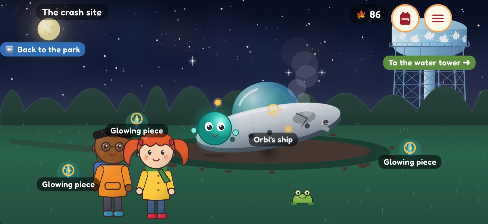

The story
One night. One alien.
A whole neighborhood of puzzles.
It's past bedtime when something streaks across the sky and crashes in Maple Leaf Park. Penny tiptoes down the squeaky stairs, cracks the garage code, and bikes down the greenway with Theo to find Orbi, a little glowing alien whose ship has broken into pieces.
- Nine chapters set in a real Seattle neighborhood: the greenway, the park, the water tower and a secret city hidden under the reservoir.
- A cast to love: brave, speedy Penny, careful Theo, flustered Orbi, and Crowley, a crow who trades shiny things and sarcasm.
- After the ending, the whole town opens up in daytime, with shops to visit, a bike race and bonus episodes.
